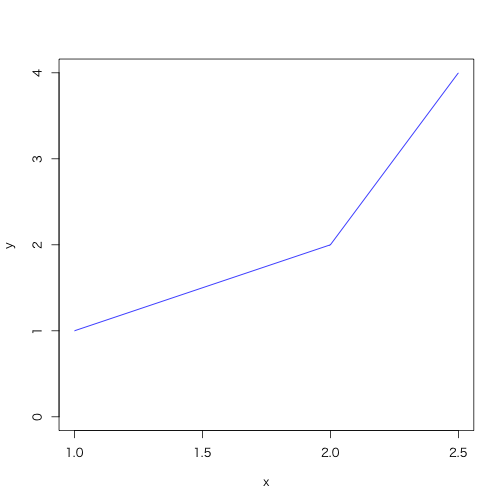
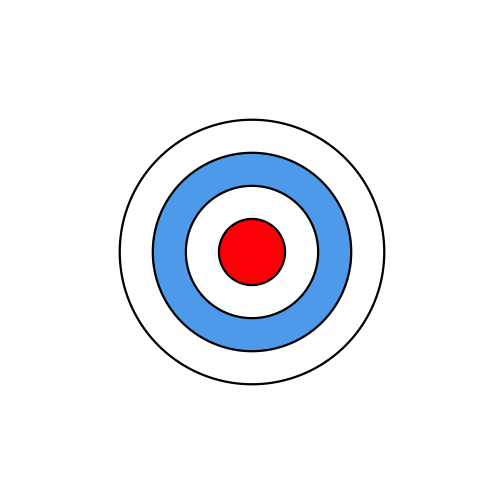

DescTools: Tools for Descriptive Statistics
記述統計学のためのツール
> library(DescTools)
バージョン: 0.99.11
| 関数名 | 概略 |
|---|---|
%c% |
Concatenates two strings without any separator. |
%like% |
Like operator |
%nin% |
Find Matching (or Non-Matching) Elements |
%overlaps% |
Determines If And How Extensively Two Date Ranges Overlap |
AUC |
Area Under the Curve |
AddMonths |
Add a Month to a Date |
Agree |
Raw Simple And Extended Percentage Agreement |
AllDuplicated |
Index Vector of All Values Involved in Ties |
AndersonDarlingTest |
Anderson-Darling Test of Goodness-of-Fit |
AscToChar |
Converts ASCII Codes to Characters and Vice Versa |
Assocs |
Association Measures |
Atkinson |
Calculate the Atkinson Index |
AxisBreak |
Place a Break Mark on an Axis |
BartelsRankTest |
Bartels Rank Test |
Benford |
Benford's Distribution |
Between |
Operators To Check, If a Value Lies Within Or Outside a Given Range |
BinToDec |
Converts numbers from binmode, octmode or hexmode to decimal and vice versa |
BinomCI |
Confidence Intervals for Binomial Proportions |
BinomDiffCI |
Confidence Interval for a Difference of Binomials |
BinomRatioCI |
Confidence Intervals for the Ratio of Binomial and Multinomial Proportions |
BoxCox |
Box Cox Transformation |
BoxCoxLambda |
Automatic Selection of Box Cox Transformation Parameter |
BoxedText |
Add Text in a Box to a Plot |
BreslowDayTest |
Breslow-Day Test for Homogeneity of the Odds Ratios |
BubbleLegend |
Add a Legend to a Bubble Plot |
CCC |
Concordance Correlation Coefficient |
Canvas |
Canvas for Geometric Plotting |
CartToPol |
Transform Cartesian to Polar/Spherical |
Coordinates |
and vice versa |
CatTable |
Function to write a table |
ChooseColorDlg |
Display Color Dialog to Choose a Color |
ClipToVect |
Reformat a Table in the Clipboard as Vector |
Clockwise |
Calculates Begin and End Angle From a List of |
Given |
Angles in Clockwise Mode |
Closest |
Find the Closest Value |
Coalesce |
Return the First Element Not Being NA |
CochranArmitageTest |
Cochran-Armitage test for trend |
CochranQTest |
Cochran's Q test |
CoefVar |
Coefficient of Variation |
CohenD |
Cohen's Effect Size |
CohenKappa |
Cohen's Kappa and Weighted Kappa |
ColToGrey |
Convert Colors to Grey/Grayscale |
ColToHex |
Convert a Color into Hex String |
ColToHsv |
R Color to HSV Conversion |
ColToRgb |
Color to RGB Conversion |
CollapseTable |
Collapse Levels of a Table |
ColorLegend |
Add a ColorLegend to a Plot |
ConDisPairs |
Concordant and Discordant Pairs |
Conf |
Confusion Matrix And Associated Statistics |
ConnLines |
Add Connection Lines to a Barplot |
Contrasts |
Pairwise Contrasts |
CorPolychor |
Polychoric Correlation |
CramerVonMisesTest |
Cramer-von Mises test for normality |
CronbachAlpha |
Cronbach's Coefficient Alpha |
CutQ |
Create a Factor Variable Using the Quantiles of a Continuous Variable |
Date |
Create a Date from Numeric Representation |
DegToRad |
Convert Degrees to Radians and vice versa |
DenseRank |
Dense Ranks |
Desc |
Describe Data |
Desc.Date |
Describe a Date Vector |
Desc.data.frame |
Describe a data.frame Or a List |
Desc.factor |
Describe a Factor, an Ordered Factor Or a Character Vector |
Desc.flags |
Describe a Set of Dichotomous Variables |
Desc.formula |
Describe Variables by Groups |
Desc.integer |
Describe an integer variable |
Desc.logical |
Describe a dichotomous variable |
Desc.numeric |
Describe a numeric vector |
Desc.table |
Describe a n-dimensional Contingency Table |
DescTools-package |
Tools for Efficient Descriptive Statistics |
DescWrd |
Use Word as Reporting Tool for Describing Data |
DivCoef |
Rao's diversity coefficient also called quadratic entropy |
DivCoefMax |
Maximal value of Rao's diversity coefficient also called quadratic entropy |
DrawAnnulus |
Draw One or Several Annuli |
DrawAnnulusSector |
Draw a Sector of an Annulus |
DrawArc |
Draw Elliptic or Circular Arc(s) |
DrawBand |
Draw Confidence Band |
DrawBezier |
Draw a Bezier Curve |
DrawCircle |
Draw a Circle |
DrawEllipse |
Draw an Ellipse |
DrawRegPolygon |
Draw Regular Polygon(s) |
Dummy |
Generate Dummy Codes for a Factor |
DunnTest |
Dunn's Test of Multiple Comparisons |
DunnettTest |
Dunnett's Test for Comparing Several Treatments With a Control |
DurbinWatsonTest |
Durbin-Watson Test |
Entropy |
Shannon Entropy and Mutual Information |
ErrBars |
Add Error Bars to an Existing Plot |
EtaSq |
Effect size calculations for ANOVAs |
Exec |
Execute a Command Given As String |
ExpFreq |
Expected frequencies |
Explore |
Interactive Graphical Data Explorer |
Factorize |
Prime Factorization of Integers |
FctArgs |
Retrieve a Functions' Arguments |
Fibonacci |
Fibonacci Numbers |
FindColor |
Get Color on a Defined Color Range |
FindCorr |
Determine highly correlated variables |
FisherZ |
Fisher r to z and z to r and confidence intervals |
FixToTab |
Text to Table |
Format |
Format Numbers and Dates |
Frac |
Return the Fractional Part of a Numeric Value |
Freq |
Frequency Table |
GCD |
Greatest Common Divisor and Least Common Multiple |
GTest |
G-Test for Count Data |
GetAllSubsets |
Get All Subsets out of a List of Elements |
GetCurrWrd |
Get a Handle to a Running Word Instance |
GetNewPP |
Create a new PowerPoint Instance |
GetNewWrd |
Create a new Word Instance |
GetNewXL |
Create a new Excel Instance |
GetPairs |
Get All Pairs out of one or two Sets of Elements |
Gini |
Gini Coefficient |
GiniSimpson |
Compute Gini-Simpson Coefficient |
Gmean |
Geometric Mean and Standard Deviation |
GoodmanKruskalGamma |
Goodman Kruskal's Gamma |
GoodmanKruskalTauA |
Goodman Kruskal's Tau a |
Herfindahl |
Concentration Measures |
HexToCol |
Identify closest match to a color given by a hexadecimal string |
HexToRgb |
Convert a Hexstring Color to a Matrix With Three Red/Green/Blue Rows |
HighLow |
Return the Lowest and the Highest Values and Their Frequencies |
Hmean |
Harmonic mean |
HmsToSec |
Convert h:m:s To/From Seconds |
HodgesLehmann |
Hodges-Lehmann Estimator of Location |
HoeffD |
Matrix of Hoeffding's D Statistics |
HotellingsT2Test |
Hotelling's T2 Test |
HuberM |
Safe (generalized) Huber M-Estimator of Location |
ICC |
Intraclass Correlations (ICC1, ICC2, ICC3 From Shrout and Fleiss) |
IdentifyA |
Identify Points in Plot Lying within a Rectangle or Polygon |
ImportDlg |
Get Path of a Data File to Be Opened |
ImportFileDlg |
Import File In Foreign Format |
InDots |
Is a Specific Argument in the Dots-Arguments? |
IsDate |
Check if an Object is of Type Date |
IsDichotomous |
Test If a Variable Contains Only Two Unique Values |
IsEuclid |
Is a Distance Matrix Euclidean? |
IsOdd |
Checks If An Integer Is Even Or Odd |
IsPrime |
IsPrime Property |
IsValidWrd |
Check Word Pointer |
IsWhole |
Check a Vector For Being Numeric, Zero Or a Whole Number |
JarqueBeraTest |
(Robust) Jarque Bera Test |
JonckheereTerpstraTest |
Exact Version of Jonckheere-Terpstra Test |
KappaM |
Kappa for m raters |
KendallTauB |
Kendall tau-b |
KendallW |
Kendall's Coefficient of Concordance W |
Keywords |
List valid Keywords for R man pages |
KrippAlpha |
Krippendorff's Alpha Reliability Coefficient |
LOCF |
Last Observation Carried Forward |
LOF |
Local Outlier Factor |
Label |
Label Attribute of an Object |
Lambda |
Goodman Kruskal Lambda |
Large |
Kth Smallest/Largest Values |
Lc |
Lorenz Curve |
LehmacherTest |
Lehmacher's Test for Marginal Homogenity |
LeveneTest |
Levene's Test for Homogeneity of Variance |
LillieTest |
Lilliefors (Kolmogorov-Smirnov) test for normality |
LinScale |
Perform a linear scaling of x |
LogLin |
Log Linear Hybrid, Generalized Log |
LogSt |
Started Logarithmic Transformation and Its Inverse |
Logit |
Generalized Logit and Inverse Logit function |
LsFct |
List Functions of a Package |
MHChisqTest |
Mantel-Haenszel Chi-Square Test |
Mar |
Set Plot Margins |
Mbind |
Bind k nxm-matrices with the same dimension |
MeanAD |
Mean Absolute Deviation From a Center Point |
MeanCI |
Confidence Interval for the Mean |
MeanDiffCI |
Confidence Interval For Difference of Means |
MeanSE |
Standard error of mean |
MedianCI |
Confidence Interval for the Median |
Midx |
Find the Midpoints of a Numeric Vector |
MixColor |
Compute the convex combination of two colors |
Mode |
Mode |
MosesTest |
Moses Test of Extreme Reactions |
MoveAvg |
Moving Average |
MultinomCI |
Confidence Intervals for Multinomial Proportions |
NPV |
One Period Returns, Net Present Value and Internal Rate of Return |
Ndec |
Count Decimal Places of a Number |
NemenyiTest |
Nemenyi Test |
OddsRatio |
Odds Ratio Estimation and Confidence Intervals |
Outlier |
Outlier |
PageTest |
Exact Page Test for Ordered Alternatives |
PairApply |
Pairwise Calculations |
PalDescTools |
Some Custom Palettes |
ParseFormula |
Parse a Formula and Create a Model Frame |
ParseSASDatalines |
Parse a SAS Dataline Command |
PartCor |
Find the Correlations for a Set x of Variables With Set y Removed |
| `PartitionBy PartitionBy Evaluates a Function Groupwise | |
PasswordDlg |
Password Dialog |
PearsonTest |
Pearson chi-square test for normality |
PercTable |
Percentage Table |
Permn |
Determine All Possible Permutations of a Set |
Phi |
Cramer's V, Pearson's Contingency Coefficient and Phi Coefficient Yule's Q and Y, Tschuprow's T |
PlotACF |
Combined Plot of a Time Series and its ACF and PACF |
PlotArea |
Create an Area Plot |
PlotBag |
PlotBag, a bivariate boxplot |
PlotBubble |
Draw a Bubble Plot |
PlotCandlestick |
Plot Candlestick Chart |
PlotCirc |
Plot Circular Plot |
PlotCorr |
Plot a Correlation Matrix |
PlotDesc |
Display descriptive plots |
PlotDot |
Cleveland's Dot Plots |
PlotDotCI |
Plot a Dotchart with Confidence Intervals |
PlotDotCIp |
Plot a Dotchart with Binomial Confidence Intervals |
PlotFaces |
Chernoff Faces |
PlotFdist |
Frequency Distribution Plot |
PlotFun |
Plot a Function |
PlotHorizBar |
Plot Horizontal Bars |
PlotLinesA |
Plot Lines |
PlotMarDens |
Scatterplot with Marginal Densities |
PlotMatrix |
Scatterplot Matrix |
PlotMonth |
Plot Monthly or Seasonal Effects Of a Univariate Time Series |
PlotMultiDens |
Plot Multiple Density Curves |
PlotPolar |
Plot Values on a Circular Grid |
PlotPyramid |
Draw a Back To Back Pyramid Plot |
PlotQQ |
QQ-Plot for Any Distribution |
PlotRCol |
Information plots |
PlotTernary |
Ternary or Triangular Plots. |
PlotTreemap |
Create a Treemap |
PlotVenn |
Plot a Venn Diagram |
PlotViolin |
Plot Violins Instead of Boxplots |
PlotWeb |
Plot a Web of Connected Points |
PoissonCI |
Poisson Confidence Interval |
PolarGrid |
Plot a Grid in Polar Coordinates |
PostHocTest |
Post-Hoc Tests |
PpPlot |
Add Slides, Insert Texts and Plots to PowerPoint |
Primes |
Find all Primes Less Than n |
PtInPoly |
Point in Polygon |
Ray |
Compact Information About the Columns of a Data Frame |
Recode |
Recode a Factor |
Recycle |
Recyle a List of Elements |
RelRisk |
Relative Risk |
Rename |
Change Names of a Named Object |
Rev |
Reverse Elements of a Vector or the Rows/Columns of Matrices and Tables |
RgbToCol |
Find the Named R-Color Which Is Nearest to a Given RGB-Color |
RndPairs |
Create Pairs of Correlated Random Numbers |
RobRange |
Robust Range |
RobScale |
Robust Scaling With Median and Mad |
Rotate |
Rotate a Geometric Structure |
RoundM |
Round to Multiple |
RunsTest |
Runs Test for Randomness |
SampleTwins |
Sample Twins |
SaveAsDlg |
Save R Objects By Choosing a File Interactively |
ScheffeTest |
Scheffe Test for Pairwise and Otherwise Comparisons |
SelectVarDlg |
Select Elements of a Set by Click |
SetAlpha |
Add an Alpha Channel To a Color |
ShapiroFranciaTest |
Shapiro-Francia test for normality |
SiegelTukeyTest |
Siegel-Tukey Test For Equality In Variability |
SignTest |
Sign Test |
Skew |
Skewness and Kurtosis |
SomersDelta |
Somers' Delta |
Sort |
Sort a Vector, a Matrix, a Table or a Data.frame |
SortMixed |
Order or Sort Strings With Embedded Numbers So |
That |
The Numbers Are In The Correct Order |
SpearmanRho |
Spearman Rank Correlation |
SplitPath |
Split Path In Drive, Path, Filename |
SpreadOut |
Spread Out a Vector of Numbers To a Minimum Interval |
Stamp |
Date/Time/Directory Stamp the Current Plot |
Str |
Compactly Display the Structure of an Arbitrary R Object |
StrAbbr |
String Abbreviation |
StrCap |
Capitalize the First Letter of a String |
StrChop |
Split a String in a Number of Pieces With Fixed Length |
StrCountW |
Count Words in a String |
StrDist |
Compute Distances Between Strings |
StrIsNumeric |
Does a String Contain Only Numeric Data |
StrPad |
Pad a String With Justification |
StrPos |
Find Position of First Occurrence Of a String |
StrRev |
Reverse a String |
StrRight |
Returns the Left Part Or the Right Part Of a String |
StrTrim |
Trim a string |
StrTrunc |
Truncate Strings and Add Ellipses If a String is Truncated. |
StrVal |
Extract All Numeric Values From a String |
Strata |
Stratified sampling |
StuartMaxwellTest |
Stuart-Maxwell Marginal Homogeneity Test |
StuartTauC |
Stuart Tau C |
SysInfo |
System Information And DescTools Options |
TextContrastColor |
Choose Textcolor Depending on Background Color |
TheilU |
Theil's U index of inequality |
ToWide |
Reshape a Vector From Long to Wide Shape Or Vice Versa |
Trim |
Trim a Vector |
TukeyBiweight |
Calculate Tukey's Biweight Robust Mean |
UncertCoef |
Uncertainty Coefficient |
UnitConv |
Unit Conversion |
Untable |
Recover Original Data From Contingency Table |
VarCI |
Confidence Interval for the Variance |
VecRot |
Vector Rotation |
Vigenere |
Vigenere Cypher |
Winsorize |
Winsorize |
WoolfTest |
Woolf Test |
WrdCaption |
Insert Caption to Word |
WrdInsTab |
Insert a Table in a Word Document |
WrdInsertBookmark |
Insert a Bookmark, Goto Bookmark and Update the Text of a Bookmark |
WrdPlot |
Insert Active Plot to Word |
WrdR |
Insert a R Command and It's Output in a Word Document |
WrdSetFont |
Set the Font in Word |
WrdTable |
Produces a Table in Word |
WrdText |
Insert Normal Text to Word |
XLGetRange |
Import Data Directly From Excel |
XLView |
Use Excel as Viewer for a Data.Frame |
Year |
Basic Date Functions |
YuenTTest |
Yuen t-Test For Trimmed Means |
ZTest |
Z Test for Known Population Standard Deviation |
ZeroIfNA |
Replace NAs by 0 |
Zodiac |
Calculate the Zodiac of a Date |
as.matrix.xtabs |
Xtabs to Matrix |
d.countries |
ISO 3166-1 Country Codes |
d.diamonds |
Data diamonds |
d.periodic |
Periodic Table of Elements |
d.pizza |
Data pizza |
day.name |
Build-in Constants Extension |
identify.formula |
Identify points in a plot using a formula. |
lines.lm |
Add a Linear Regression Line |
lines.loess |
Add a Loess or a Spline Smoother |
median.factor |
Median for Ordered Factors |
pRevGumbel |
"Reverse" Gumbel Distribution Functions |
power.chisq.test |
Power Calculations for ChiSquared Tests |
reorder.factor |
Reorder the Levels of a Factor |
split.formula |
Formula Interface for Split |
wdConst |
Word VBA constants |
AUC
Arguments
- x, y
- method...
trapezoid,steporspline - na.rm
> data.frame(x = c(1, 2, 2.5), y = c(1, 2, 4)) %$% {
+ AUC(x, y) %>% print()
+ plot(x, y, type = "l", col = "blue", ylim = c(0, 4))
+ }
> # [1] 3

ColToHex
> ColToHex(c("lightblue", "salmon"))
[1] "#ADD8E6" "#FA8072"
ColToHsv
> ColToHsv("peachpuff")
[,1]
h 0.07857143
s 0.27450980
v 1.00000000
ColToRgb
> ColToRgb("peachpuff")
[,1]
red 255
green 218
blue 185
DrawCircle
> Canvas(xlim = c(-5,5))
> DrawCircle(radius = 4:1,
+ col = c("white", "steelblue2", "white", "red"),
+ lwd = 3,
+ nv = 300)

Freq
> data(d.pizza)
> Freq(d.pizza$price) %>% kable()
Error in kable(.): table format not implemented yet!
HighLow
最小値と最大値を同時に算出する
> data(d.pizza)
> d.pizza %$% HighLow(temperature, na.rm = TRUE) %>% cat()
lowest : 19.3, 19.4, 20, 20.2 (2), 20.35
highest: 63.8, 64.1, 64.6, 64.7, 64.8
Outlier
外れ値を表示
> Outlier(d.pizza$temperature, na.rm = TRUE)
[1] 20.00 20.45 22.20 20.35 22.10 21.30 21.00 21.60 21.70 21.80 22.20
[12] 22.50 20.40 21.90 19.40 20.20 19.30 20.20 22.40